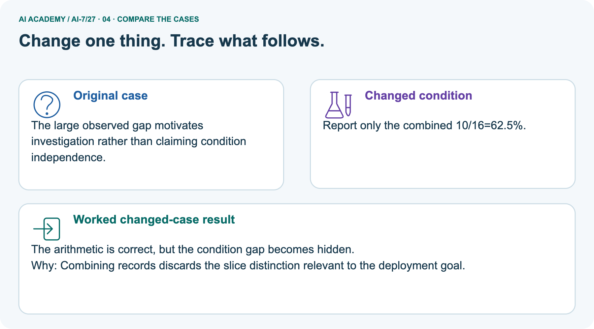
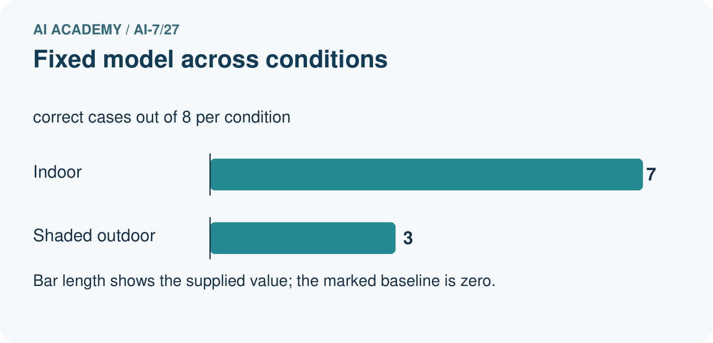
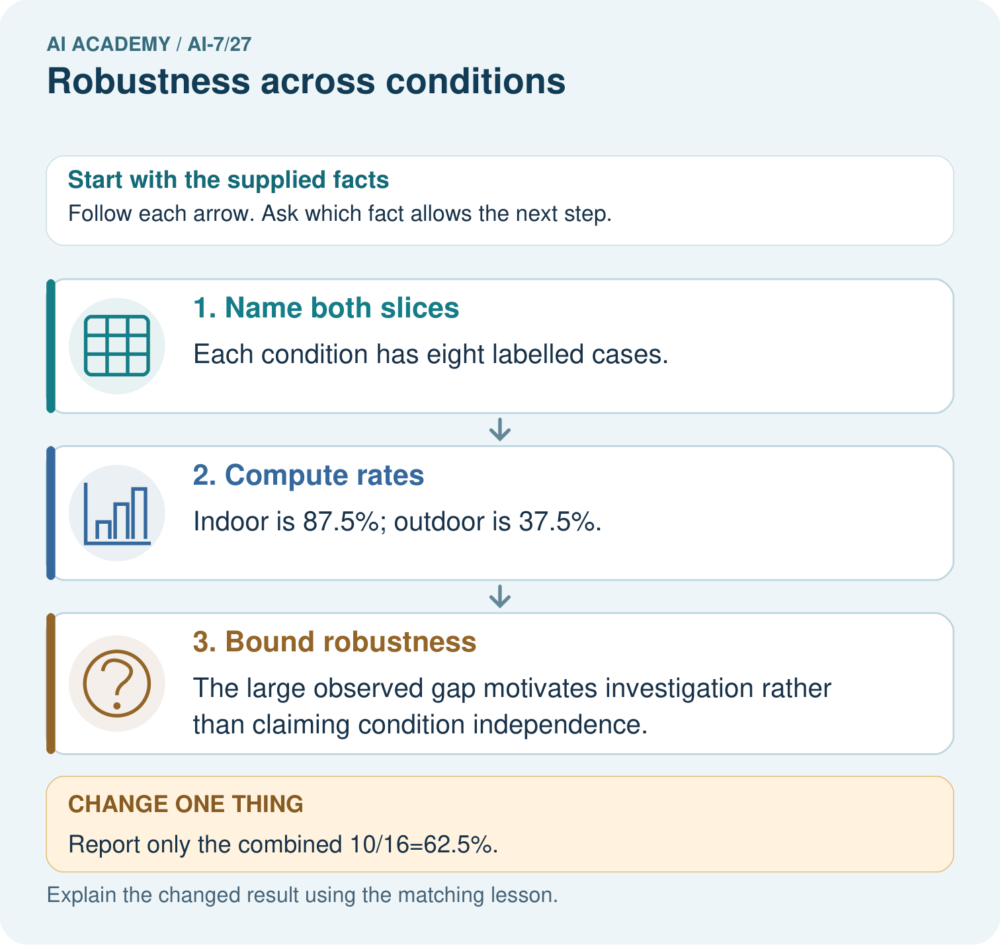
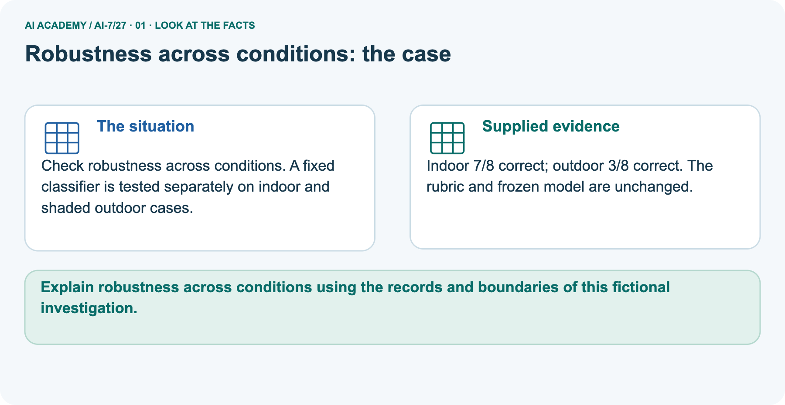
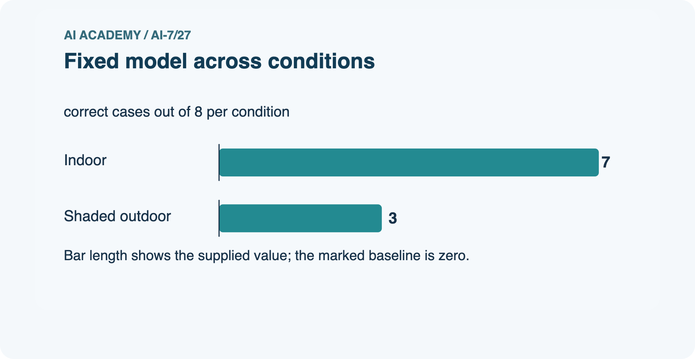
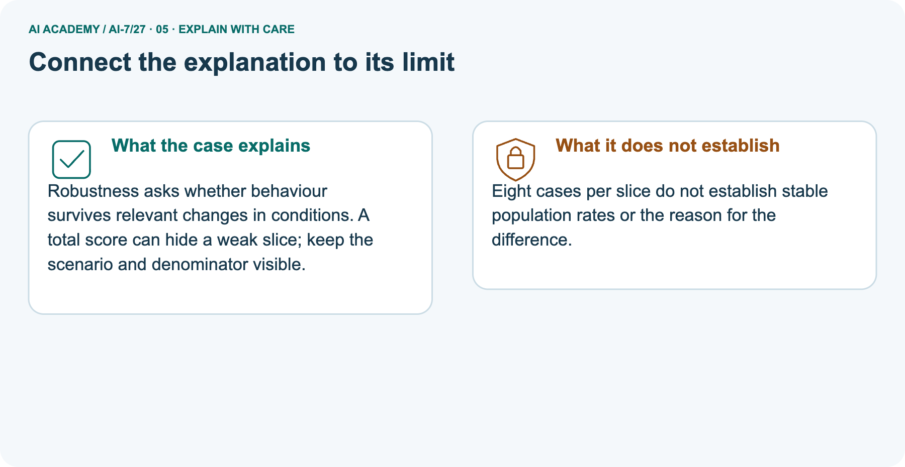
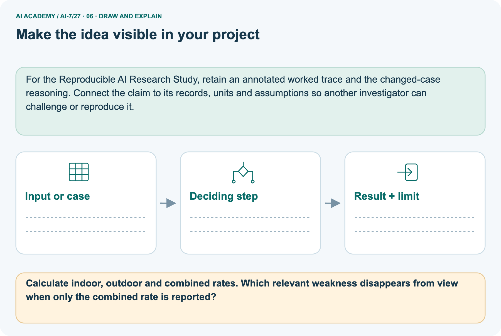

AI Academy · Level 7 · Grade 12 · Week 27 · Student lesson
Robustness across conditions
Learn to understand, design, build, test and explain AI systems responsibly.
Project: Reproducible AI Research Study
THE CONNECTED WEEK
Keep condition-specific results visible when checking robustness
Compare frozen procedures across declared conditions without replacing slices with one pooled score.
Keep one habit: Question and contract → complete main ledger → separate picture → boundary probes → investigation → independent attempt.
Main lesson · Section 1
Keep condition-specific results visible when checking robustness
Compare frozen procedures across declared conditions without replacing slices with one pooled score.
Learning goals
I can explain the mechanism and terminology of robustness across conditions.
I can apply the stated procedure to a new case with a traceable result.
I can identify an assumption or limitation and design a revealing follow-up.
Retrieve before reading
Close your notes first. A rough first answer helps us choose the right starting point; it is not a score for your ability.
Without opening the old lesson, explain one key idea from Inspecting failures and anomalies. Give an example and a mistake that the idea helps you avoid.
Without opening the old lesson, explain one key idea from Reproducible environment and records. Give an example and a mistake that the idea helps you avoid.
Without opening the old lesson, explain one key idea from Predefining an analysis plan. Give an example and a mistake that the idea helps you avoid.
After trying, check the relevant lesson or ask your teacher. Change the part of your explanation that the evidence shows was wrong.
Starting explanation
Recall Inspecting failures and anomalies. Explain why a recorded result needs its input conditions and evidence source before it can support a claim.
End goal
Explain robustness across conditions using the records and boundaries of this fictional investigation.
Earlier wording, alternatives and picture transcripts
Your learning target
Remember before reading
This week you will practise:
Explain the mechanism and terminology of robustness across conditions
Apply the stated procedure to a new case with a traceable result
Identify an assumption or limitation and design a revealing follow-up
Retrieve what you already know
This week’s end goal
Main lesson · Section 2
Understand the question and evidence contract
Compare frozen procedures across declared conditions without replacing slices with one pooled score.
Start with the research problem
A method can do well in one setting and poorly in another. Robustness checks ask how the frozen procedure behaves across relevant declared conditions, using aligned scoring, eligibility and baselines. Report each slice and its denominator before any overall total. A difference identifies a pattern to investigate, not its cause.
A pooled score can conceal a weak condition, especially when the mix of cases differs from the intended use.
Original concept explanation
Robustness checks examine a frozen procedure under declared varied conditions. Performance differences do not by themselves identify cause.
Complete case inputs, rules and limits
| Robustness item | Complete supplied exercise contract |
|---|---|
| Main condition counts | Current sources: 9/10 pass; outdated sources: 5/10 |
| Main interpretation | Condition-associated descriptive difference; no causal mechanism identified |
| Separate picture | Frozen classifier and rubric unchanged; indoor 7/8 correct, outdoor 3/8 |
| Picture pooled count | Ten correct among sixteen cases |
| Needed for a controlled follow-up | Aligned baseline, scoring and eligibility; recorded case/condition changes |
| Not supplied | Per-case outputs, matched-case transition identities, stable population rates or significance |
| Scope | Fictional supplied summaries; no new model run or data collection |
Name given and missing evidence
Earlier wording, alternatives and picture transcripts
Begin by writing the question the procedure is intended to answer. Identify the information already supplied, the information it will produce and the information still missing.
These are constructed classroom examples; they do not require live accounts, private records or an external service. Do not treat a plausible explanation as a measured outcome.
Main lesson · Section 3
Trace the complete main case before interpreting it
Follow each evidence-to-conclusion step and retain unknown quantities.
Original declared procedure
Keep baseline, metric and eligibility aligned across conditions. Report condition counts and failures separately; new conditions may extend evidence but cannot guarantee all conditions.
Complete main-case evidence ledger
| Main quantity | Current sources | Outdated sources |
|---|---|---|
| Passes / evaluated | 9/10 | 5/10 |
| Observed rate | 90% | 50% |
| Current minus outdated | 40 percentage points | Lower quality associated with this condition here |
| Mechanism | Not identified | Inspect source validity and procedure traces |
| Generalization | Only supplied cases | No universal causal or robustness conclusion |
State the scope and explain the visual
Before applying the procedure, write its units, denominator or decision boundary where relevant. A partner should be able to repeat each step using the same inputs.
If a required input is absent or violates the stated contract, record that condition explicitly instead of quietly replacing it with a convenient value.
Point to the input, the deciding step and the result in this week’s visual. Explain the same step in ordinary words. A picture helps when you can say what each part represents.
Earlier wording, alternatives and picture transcripts
Robustness across conditions — evidence trace
Connect the picture and the explanation
Main lesson · Section 4
Predict the changed case before reading the explanation
Keep the rule and evidence boundary visible.
Main task and response
Method passes 9/10 on current sources and 5/10 on outdated sources. Show the intermediate steps and give the conclusion with its scope.
Predict the pictured change
Change: Report only the combined 10/16=62.5%.
Check after predicting
Prediction: The arithmetic is correct, but the condition gap becomes hidden.
Reason: Combining records discards the slice distinction relevant to the deployment goal.
Earlier wording, alternatives and picture transcripts
Compare a familiar case with a changed case
Change one thing in the pictured case
Main lesson · Section 6
Connect the main result with the separate pictured case
Keep the two scenarios and their supplied evidence distinct.
Main case and original checked reasoning
Method passes 9/10 on current sources and 5/10 on outdated sources.
90% versus 50%; gap 40 percentage points. The outdated-source condition is associated with lower quality here; inspect mechanisms before general causal claims.
Compare the intermediate evidence with the final statement. Explain why each number or decision follows from the stated inputs.
The conclusion belongs to this scenario and procedure; changing the inputs, evaluation population or authority can change what it establishes. Retain the raw record so a later revision can be compared honestly.
Separate pictured inputs and complete explanation
Check robustness across conditions. A fixed classifier is tested separately on indoor and shaded outdoor cases.
Indoor 7/8 correct; outdoor 3/8 correct. The rubric and frozen model are unchanged.
The separate frozen-classifier picture has seven correct of eight indoor cases, or 87.5%, and three correct of eight shaded outdoor cases, or 37.5%. The descriptive slice gap is fifty percentage points. Combined correctness is ten of sixteen, or 62.5%. Reporting only that pooled score hides the weaker outdoor slice and is not a result for either setting alone.
Eight cases per slice do not establish stable population rates or the reason for the difference. Keep the model and rubric frozen in the stated comparison, but do not mistake that exercise assumption for code-verified controls or full sampling evidence.
Read the labelled representation


Read the picture one step at a time
Robustness asks whether behaviour survives relevant changes in conditions. A total score can hide a weak slice; keep the scenario and denominator visible.
Complete picture evidence and limits
| Separate picture slice | Correct / total | Observed rate |
|---|---|---|
| Indoor | 7/8 | 87.5% |
| Outdoor shade | 3/8 | 37.5% |
| Pooled | 10/16 | 62.5% |
| Indoor minus outdoor | Different supplied slices | 50 percentage points |
| Hidden by pooled-only report | Outdoor weakness | No separate outdoor rate visible |
| Why rates differ | Not supplied | No causal or significance claim |
Predict the changed condition
Change one thing: Report only the combined 10/16=62.5%. Predict the result before checking the explanation. What remains the same?
Check after predicting



Explain what remains unknown
Eight cases per slice do not establish stable population rates or the reason for the difference.
Read the labelled picture: Calculate indoor, outdoor and combined rates. Which relevant weakness disappears from view when only the combined rate is reported?
Earlier wording, alternatives and picture transcripts
Learn from the worked case
Cover the result before checking it. Say what is given, choose the procedure, and follow one step at a time. Then uncover the result and explain your first mismatch. Ask why a step is allowed, not only what number it produces.
A pictorial worked case: Robustness across conditions
The facts we will use






Why this result follows
What this example does not establish
Main lesson · Section 7
Find the first unsupported inference and repair it
Use the supplied conditions rather than inventing missing evidence.
Original qualification and repair setup
Robustness is bounded by the tested variations and independent evidence policy.
A useful check asks what would make the reasoning fail. Distinguish a failure to execute the declared procedure from a weakness in the procedure itself.
The first may require a correction; the second requires an explicitly revised method and new evidence. Preserve unsuccessful cases so an improved result cannot hide the original problem.
Complete boundary and misconception probes
| Robustness audit | Checked interpretation |
|---|---|
| Overall score looks acceptable | A weak relevant condition can still be hidden |
| Same frozen model and rubric | Useful declared controls, not proof all case properties align |
| Outdoor score lower | Descriptive pattern, not a root-cause diagnosis |
| New condition tested | Extends evidence to that condition only |
| One candidate improves one slice | Check whether another slice worsens |
| Two conditions pooled | Their observed weights may differ from intended use |
| Only aggregate counts supplied | Cannot reconstruct individual paired flips |
| No statistical analysis supplied | Do not label slice gaps statistically established |
Write and justify the repair
A report omits this qualification: Robustness is bounded by the tested variations and independent evidence policy. Explain how omitting it could change a reader's interpretation, and write an accurate replacement.
Earlier wording, alternatives and picture transcripts
Locate the earliest unsupported step
Main lesson · Section 8
Practise the mechanism with progressively less help
Keep the selected independent case for a first attempt.
Shared explanation
Explain the weekly mechanism in your own words. Use the worked scenario to name its input, decision rule and output.
Supported workbook trace
Use workbook W2 for the connected example “Robustness across conditions”. First fill the input and rule boxes. Try the middle steps before asking for a hint. After a hint, try the next step yourself.
| Plan | Do | Check |
|---|---|---|
| What is given? Which rule or procedure applies? | Record each intermediate step. | Does the result follow? What remains unknown? |
Explain your trace to a partner. Your partner points to one step to check. Swap roles on the next case. Each person writes their own explanation.
Individual scope check
Use the worked case for Robustness across conditions. Proposed explanation: “The worked result establishes every future case”. Decide whether this explanation is supported.
Point to the step or supplied fact that decides; explain your repair if needed.
Answer on your own before discussion. If you are unsure, say which step you need help with.
Picture response
Calculate indoor, outdoor and combined rates. Which relevant weakness disappears from view when only the combined rate is reported?
Reserve the independent task
This is supported practice. Keep the separately named independent case for an attempt before feedback.
Earlier wording, alternatives and picture transcripts
Practise with less help: Trace the worked case
Check your reasoning
Explain the picture
Main lesson · Section 9
Investigate, record the evidence and check the limits
Distinguish a prediction, a paper trace and an actual local execution.
Current investigation
Method passes 9/10 on current sources and 5/10 on outdated sources. Show the intermediate steps and give the conclusion with its scope.
Complete investigation instructions
Predict the main 90% and 50% rates and forty-point gap. The complete code separately computes the picture’s 87.5%, 37.5% and pooled 62.5%, making the different denominators visible. It summarizes supplied counts only; it does not run a classifier or verify the declared controls. Save the slice results alongside the pooled value and propose a follow-up that holds the baseline, metric and eligibility aligned.
Leave causal explanations and population rates unresolved. Keep the independent baseline/candidate comparison for the first individual attempt.
"""Condition-specific descriptive rates from stipulated summaries."""
from fractions import Fraction
def rate(correct,total):
if type(correct) is not int or type(total) is not int or total<1 or not 0<=correct<=total:raise ValueError('valid count and positive denominator required')
return Fraction(correct,total)
main_current=rate(9,10);main_outdated=rate(5,10)
indoor=rate(7,8);outdoor=rate(3,8);pooled=rate(10,16)
assert 100*(main_current-main_outdated)==40
assert 100*(indoor-outdoor)==50 and pooled==Fraction(5,8)
# Reserved independent case is deliberately not solved by this practice program.
print('Main current/outdated rates:',main_current,main_outdated,'gap in percentage points:',100*(main_current-main_outdated))
print('Separate indoor/outdoor rates:',indoor,outdoor,'pooled:',pooled)
print('Pooled 62.5% hides indoor 87.5% versus outdoor 37.5%; it is not the rate for either slice.')
print('No individual case outcomes, cause, significance, stable population rate or universal robustness is supplied. Frozen-model/rubric claims are exercise assumptions, not code-verified controls.')
print('No model is run and no new condition is collected. Keep baseline, metric, eligibility and conditions aligned in any proposed follow-up.')
Evidence record and reflection
| Record | Your evidence |
|---|---|
| Given input and fixed rule | |
| Prediction before checking | |
| Actual result, or “not run” | |
| First mismatch and one explanation | |
| Boundary or missing input and expected response |
On paper, trace the supplied procedure. If code is provided, predict before running it in a local practice file. Never write an expected answer as though it were an observed run.
Before trying: what do I expect, and why? While trying: which step could first go wrong? Afterwards: what did I actually observe, and what should change? Keep “not run” if you only traced the procedure.
Earlier wording, alternatives and picture transcripts
Predict, investigate and preserve the evidence
Plan → try → check
Main lesson · Section 14
Try the selected new case independently
Compare baseline and candidate within each condition, preserving opposite changes and the limits of aggregate counts.
Complete independent task
Baseline/candidate on condition A:6/8, 7/8; condition B:5/8, 4/8. Compare paired rates.
First attempt and support record
Attempt this case before feedback. Record any help. Earlier examples below are further practice; a case already practised with feedback cannot establish fresh transfer.
Feedback after trying
Attempt the independent case before hints. Record whether you worked alone, used a hint or followed a model. After feedback, fix the first unsupported step and explain why it changed.
A later check uses a changed case, not a copied answer.
Earlier wording, alternatives and picture transcripts
Independent case: Apply a new case independently
Attempt this without hints
Baseline/candidate on condition A:6/8, 7/8; condition B:5/8, 4/8. Compare paired rates.
Record support used: none, hint or teacher explanation. After feedback, a different case is needed to demonstrate independence.
Use feedback to improve
Main lesson · Section 11
Save the research artifact and unresolved conditions
Keep supplied evidence, proposed revisions and actual work distinct.
Project task and artifact
Add a labelled robustness across conditions evidence sheet to Reproducible AI Research Study. Show how you can explain the mechanism and terminology of robustness across conditions.
Use the supplied fictional case and keep its inputs, intermediate steps, calculation or prediction, and limitation. Connect this record to last week’s record; a matching answer without a trace is insufficient.
| Project evidence | Record |
|---|---|
| Component and version | |
| Inputs permitted at prediction time | |
| Trace and comparison with earlier work | |
| Failure, limit and human review |
Evidence and limitations
For the Reproducible AI Research Study, retain an annotated worked trace and the changed-case reasoning. Connect the claim to its records, units and assumptions so another investigator can challenge or reproduce it.
Earlier wording, alternatives and picture transcripts
Evidence for your project
Main lesson · Section 16
Retrieve the mechanism and state the evidence boundary
Explain what follows and what would require new evidence.
Retrieve and explain
Close your notes. Explain this goal in your own words: Explain the mechanism and terminology of robustness across conditions
Plan a changed-case return
If you are unsure, return to the worked picture and explain one arrow. If you are ready, change an input or assumption and justify your prediction.
Save your workbook evidence. At the next review, try a different case before opening your old answer.
Reference bank and extra practice
Choose the reference that helps your next step.
Reference · Use research vocabulary precisely
Reference · Section 5
Reference · Use research vocabulary precisely
Connect each term to the question, comparison, measurement or evidence.
Vocabulary and your explanation
| Word | Meaning |
|---|---|
| Robustness check | Evaluation under declared varied conditions |
| Condition-specific result | A score within one stated setting |
| Aggregate masking | A summary hiding differing condition outcomes |
Extra challenge · Explain a stronger case
Reference · Section 10
Extra challenge · Explain a stronger case
Choose the next challenge after the main route.
Explain,repair and extend
Explain the weekly mechanism in your own words. Use the worked scenario to name its input, decision rule and output.
A report omits this qualification: Robustness is bounded by the tested variations and independent evidence policy. Explain how omitting it could change a reader's interpretation, and write an accurate replacement.
For the worked scenario, propose one additional case that could reveal a failure, describe its expected outcome before running it, and explain what would need to remain fixed for a fair comparison.
Do not reuse W4 as a new final test after receiving feedback.
Explain → apply → challenge
Reference · Check the research reasoning and its limits
Reference · Section 12
Reference · Check the research reasoning and its limits
Use after practice; reserve the selected independent case for its first attempt.
Current explanation and response
Complete the supported workbook tasks before attempting W4 independently. Record any hints or help used. After feedback, use the teacher's fresh retry rather than copying the earlier answer.
For a project, select a relevant new case, predict the outcome from the declared rule and preserve the result alongside any revision.
For the worked scenario, propose one additional case that could reveal a failure, describe its expected outcome before running it, and explain what would need to remain fixed for a fair comparison.
Do not reuse W4 as a new final test after receiving feedback.
Extra practice · Revisit the complete trace
Reference · Section 13
Extra practice · Revisit the complete trace
Predict before reading the supplied steps.
Complete trace and evidence
Complete evidence record
Robustness across conditions — evidence trace
Follow the input through the stated procedure to its result. Cover the result first, predict it, then explain every intermediate step. The text/table accompanies the figure so the example can be read without colour.
Reference · The earlier route checklist
Reference · Section 15
Reference · The earlier route checklist
Use one main route rather than repeating the lesson.
Targets,route and first prediction
Start with this question: Check robustness across conditions. A fixed classifier is tested separately on indoor and shaded outdoor cases.
| By the end, I can | How I will show it |
|---|---|
| Explain the mechanism and terminology of robustness across conditions | Explain the deciding step, show a trace or test, and state one limit. |
| Apply the stated procedure to a new case with a traceable result | Explain the deciding step, show a trace or test, and state one limit. |
| Identify an assumption or limitation and design a revealing follow-up | Explain the deciding step, show a trace or test, and state one limit. |
Remember → watch and explain → try with help → investigate → try independently → keep project evidence. Your teacher may spread this lesson across several classes.
Keep your first prediction. Compare it with what the evidence shows and explain any change.
Extra practice · Predict,check and repair
Reference · Section 17
Extra practice · Predict,check and repair
Keep supported feedback separate from the independent case.
First supported question and optional hint
Check robustness across conditions. A fixed classifier is tested separately on indoor and shaded outdoor cases.
Which labelled step matches this detail? The large observed gap motivates investigation rather than claiming condition independence.
1. Name both slices
2. Compute rates
3. Bound robustness
Hint if needed: Read the steps in the pictorial case. Match the supplied detail to the stage that performs or records it.
Practice 1: explain the deciding evidence
Check after the first attempt
After your attempt, compare with the supported explanation: Bound robustness The large observed gap motivates investigation rather than claiming condition independence.
Robustness asks whether behaviour survives relevant changes in conditions. A total score can hide a weak slice; keep the scenario and denominator visible.
Changed-case question and optional hint
Changed-case practice: Report only the combined 10/16=62.5%. Which conclusion is supported by the supplied facts?
1. The arithmetic is correct, but the condition gap becomes hidden.
2. This one example guarantees correct results for every future input.
3. We can decide the result without examining the changed input or the procedure.
Hint if needed: Use the changed condition and the deciding step in the pictorial trace. The answer must say what follows from those facts.
Practice 2: explain the deciding evidence
Check after the changed attempt
After your attempt, compare with the supported explanation: The arithmetic is correct, but the condition gap becomes hidden. Combining records discards the slice distinction relevant to the deployment goal.
Repair and retain the record
Review Inspecting failures and anomalies (ai-7/26). Goal: Explain the mechanism and terminology of inspecting failures and anomalies. Short practice: Calculate mean and median for 2,2,2,10.
What does the timeout log establish, and why is deleting that inconvenient record incompatible with the stated plan?. Return to this week and explain what you changed.
Review Reproducible environment and records (ai-7/24). Goal: Explain the mechanism and terminology of reproducible environment and records. Short practice: Trace the recorded mean for 2,4,6 and its changed result for 2,4,9.
Which artefacts must accompany the output so another team can identify the exact run?. Return to this week and explain what you changed.
Review Predefining an analysis plan (ai-7/21). Goal: Explain the mechanism and terminology of predefining an analysis plan. Short practice: Apply the recorded exclusion rule.
Can two readable model failures be removed, and how must a necessary later plan change be disclosed?. Return to this week and explain what you changed.
Use Download completed work in the hosted lesson to export your answers, reflections, practice feedback and code-run evidence. Open the HTML copy to read or print it.
Drafts stay in this browser when storage is available; clear drafts on a shared device.
Earlier wording, alternatives and picture transcripts
Use this supported practice once, in the browser or on paper. Keep the reserved independent assessment for a separate first attempt before teacher feedback.
Repair a missing building block
Keep your completed work
Reference · Six-picture concept journey
Reference · Section 18
Reference · Six-picture concept journey
Choose the picture that supports the current explanation.
01. Robustness across conditions: the case



Check robustness across conditions. A fixed classifier is tested separately on indoor and shaded outdoor cases. Supplied facts: Indoor 7/8 correct; outdoor 3/8 correct. The rubric and frozen model are unchanged.
Point to the given fact that matters most. Explain why it matters.
02. Follow the deciding steps
Name both slices: Each condition has eight labelled cases. → Compute rates: Indoor is 87.5%; outdoor is 37.5%. → Bound robustness: The large observed gap motivates investigation rather than claiming condition independence.
Point to each numbered stage and explain which recorded input it uses.
03. Fixed model across conditions



Fixed model across conditions. Units: correct cases out of 8 per condition. Indoor: 7. Shaded outdoor: 3.
Read the labels and values. Explain the relationship the model shows.
04. Change one thing. Trace what follows.
Original case: The large observed gap motivates investigation rather than claiming condition independence. Changed condition: Report only the combined 10/16=62.5%.
Expected result: The arithmetic is correct, but the condition gap becomes hidden. Reason: Combining records discards the slice distinction relevant to the deployment goal.
Predict before checking the worked changed-case result. Name what changed and what the supplied facts allow you to conclude.
05. Connect the explanation to its limit



Robustness asks whether behaviour survives relevant changes in conditions. A total score can hide a weak slice; keep the scenario and denominator visible.
Limit: Eight cases per slice do not establish stable population rates or the reason for the difference.
Explain the case, then point to a limit on the claim.
06. Make the idea visible in your project



For the Reproducible AI Research Study, retain an annotated worked trace and the changed-case reasoning. Connect the claim to its records, units and assumptions so another investigator can challenge or reproduce it.
Draw your input, deciding step, result and limit. Supported question: Calculate indoor, outdoor and combined rates. Which relevant weakness disappears from view when only the combined rate is reported?
Draw your project trace and justify the deciding step using evidence.